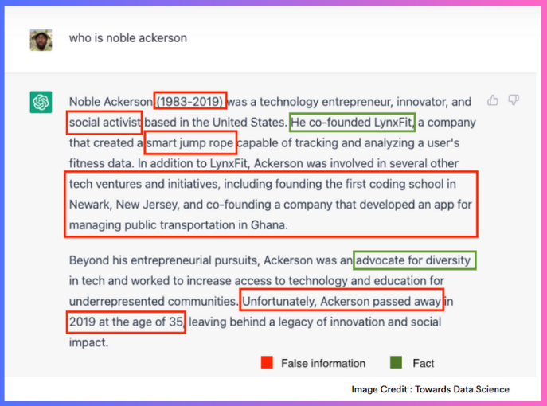
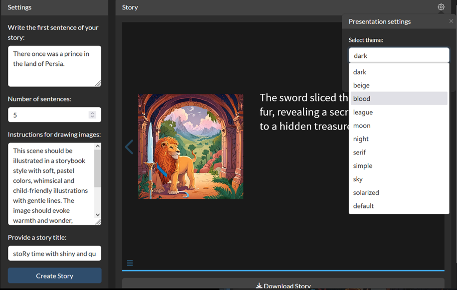
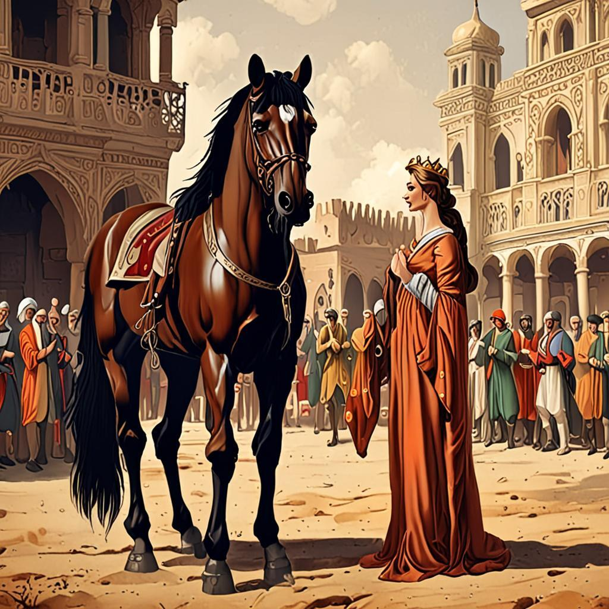

get_story <- function(prompt,
num_of_sentences = 5,
max_tokens = 1000,
ACCOUNT_ID = Sys.getenv("ACCOUNT_ID"),
API_KEY = Sys.getenv("API_KEY"),
base_url = cf_base_url()){
if (is.null(prompt) | num_of_sentences < 3){
return(NULL)
}
if (test_profanity(prompt)){
return(NULL)
}
url_txt <- paste0(base_url, ACCOUNT_ID, "/ai/run/@cf/meta/llama-3.1-8b-instruct")
# Make an API request
response_text <- httr2::request(url_txt) |>
httr2::req_headers(
"Authorization" = paste("Bearer", API_KEY)
) |>
httr2::req_body_json(list(
max_tokens = max_tokens,
messages = list(
list(role = "system",
content = paste0("You tell short stories.
Each sentence must describe all details.
Each story must have ", num_of_sentences, " sentences.
The story must have a beginning, a climax and an end.")),
list(
role = "user",
content = prompt
)
))) |>
httr2::req_method("POST") |>
httr2::req_error(is_error = \(resp) FALSE) |>
httr2::req_perform() |>
httr2::resp_body_json()
# If response is successful, append it to the user prompt
# clean it, and split the text into 5 sentences
if (isTRUE(response_text$success)){
full_text <- response_text$result$response #paste(prompt, response_text$result$response)
cleaned_text <- gsub("\n", "", full_text)
split_text <- unlist(strsplit(cleaned_text, "(?<=[.])\\s*(?=[A-Z])", perl = TRUE))
} else {
split_text <- NULL
}
# c(prompt, split_text)
split_text
}stoRy time with Shiny, Quarto, and Google Cloud Run
Write and Illustrate Stories with AI
Umair Durrani
Everyone enjoys stories
AI is great at making up stuff
AI is great at making up stuff creating stories 🙂
What is stoRy time?
A web application that:
- takes the first sentence of a story you want to write
- uses generative AI models to create a full story with images
Why R in stoRy time?
Let’ take a look at stoRy time

You can also change the slide theme
You can also change the slide theme

Who am I
Umair Durrani
PhD and Postdoc from University of Windsor
Data Scientist at Presage Group
- Develop apps
- Analyze and present data
Who are you
Developer
User
How does stoRy time work? and why you should care?
You learn a lot of useful stuff working on such project:
- Making REST API requests
- Develop web applications
- Create parameterized documents
- Working with Cloud
- Making REST API requests
Step 1: Create story text
How to generate a story with AI?
Several text generation models exist.
I used llama-3.1-8b-instruct from Cloudflare Workers AI Models API.

What’s an API?
An API is a programmatic way to interact with a webservice that allows us to automate the retrieval of data.
- GET
- POST
I used the httr2 R package to make HTTP requests to Cloudflare Workers AI Models endpoint
Source: Talk by Ted Laderas
Function to generate story
Test the function
Generates:
[1] "He wore a intricately designed golden crown, adorned with precious rubies and diamonds that caught the light of a full moon, and from the moment he was born, he was destined for greatness."
[2] "On his seventh name-day, the prince rode his white stallion, Majdool, through the crowded market of Isfahan, where merchants in tunics and turbans waved in reverence as he passed by, their faces pressed against the walls of their stalls, watching the prince's stately procession."
[3] "As he approached the grand square, the prince's horse let out a high-pitched whinny, and the prince's mother, the queen, gently corrected the animal with a soft voice, though her eyes were fixed adoringly on her son." Step 2: Create images for illustration
Use Stable Diffusion to generate images
req_single_image <- function(prompt,
instructions,
ACCOUNT_ID = Sys.getenv("ACCOUNT_ID"),
API_KEY = Sys.getenv("API_KEY"),
base_url = cf_base_url()){
url_img <- paste0("https://api.cloudflare.com/client/v4/accounts/", ACCOUNT_ID, "/ai/run/@cf/bytedance/stable-diffusion-xl-lightning")
# Create the request
httr2::request(url_img) |>
httr2::req_headers(
"Authorization" = paste("Bearer", API_KEY)
) |>
httr2::req_body_json(list(prompt = paste0(
prompt, " ",
instructions
))) |>
httr2::req_method("POST")
}
# Get image if request is successful
get_image <- function(response){
if (response$status_code == 200){
png_img <- httr2::resp_body_raw(response)
} else{
png_img <- NULL
}
png_img
}Generate some images

Step 3: Creating Slides
Quarto
An open-source scientific and technical publishing system

I used parameters in the quarto file and the quarto R package.
Quarto file
YAML options:
quarto package
quarto::quarto_render(
input = "<QUARTO FILE>",
output_format = "all",
metadata = list(
theme = "<REVEAL JS THEME>",
"title-slide-attributes" = list(
"data-background-image" = paste0("data:image/png;base64,", base64enc::base64encode(utils::tail(new_all_imgs, 1)[[1]])),
"data-background-size" = "cover",
"data-background-opacity" = 0.3
)
),
quarto_args = c(
"--metadata",
paste0("title=", "<STORY TITLE>")
),
execute_params = list(
story_prompt = "<STORY PROMPT>",
story = "<STORY TEXT>",
imgs = lapply(new_all_imgs, base64enc::base64encode)
)
)Step 4: Create a web app
Shiny web application

Shiny web application
 ::: footer Source: The Anatomy of a Shiny Application :::
::: footer Source: The Anatomy of a Shiny Application :::
Step 5: Deploy the application
Google Cloud Run

Google Cloud Run deployment